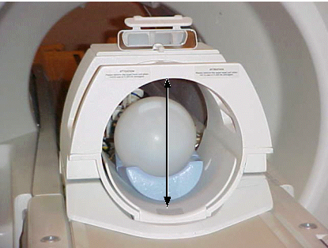
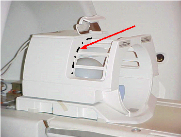
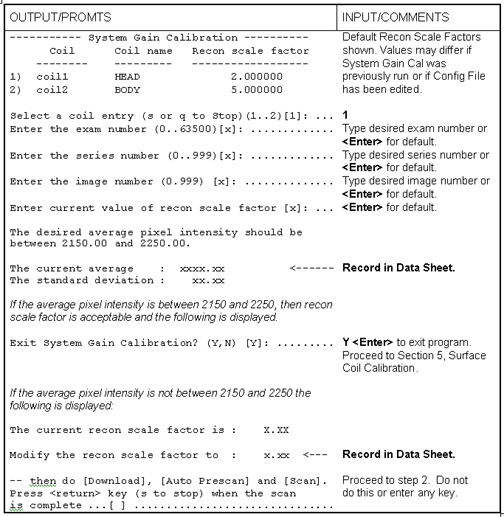
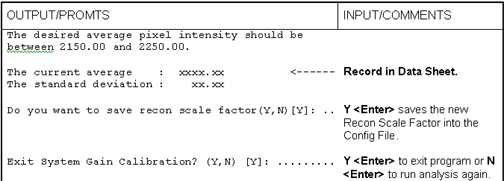

Operating Documentation
Direction 5133315-3, Rev# 14
Signa EXCITE HD 1.5T Service Methods
Module Version 1.0, Version Date 5/15/07
Operating Documentation |
| Required Persons | Preliminary Reqs | Procedure | Finalization |
|---|---|---|---|
| 1 |
This procedure contains information for both:
| Item | Qty | Effectivity | Part# | Manufacturer | |
|---|---|---|---|---|---|
| Head TLT Sphere, 17 cm diameter, Silicon Oil Filled | 1 | - | 2258364 | - | |
| ||||
| Eye contact may cause minor irritation. | ||||
| The TLT Sphere contains Dimethyl Silicone fluid. | ||||
| DO NOT INGEST. If a leak or spill occurs wipe up or absorb in inert material and place in container for disposal. Incineration or landfill is the recommended disposal method. |
| Condition | Reference | Effectivity |
|---|---|---|
Insure prerequisites have been accomplished as given in the main procedure. | - | - |
Remove the Body TLT Sphere from the table and install the Head Coil with Head Holder.
Install the Head TLT Sphere and prop it up with pads to center it Top/Bottom within the Head Coil. See Illustration 1.
Illustration 1: PHANTOM POSITIONING

Position the Head TLT Sphere Front/Back in the Head Coil so it is centered on the rear edge of the cage per Illustration 4-2, then landmark on the center of the sphere.
Illustration 2: HEAD TLT SPHERE FRONT/BACK POSITION

At the Magnet Enclosure keypad, press <Landmark>, then <Advance to Scan>.
At the Operator Workstation, prepare the system for a System Gain Cal, Head scan using the "Service Protocols" procedure located on the service methods CD-ROM.
Click on [Auto Prescan]. After auto prescan, verify that R1 = 9 and R2 = 14. If not, perform a Manual Prescan and set R1 = 9 and R2 = 14. Record the R1, R2, TG, and system frequency (AX) values in “System Gain Calibration Data”.
Click on [Scan].
At the Operator Workstation, go to the Service Desktop, click on [Cal/Checks] and select System Gain Calibration from the tools list, then click on [START]. Continue per Illustration 3.
Illustration 3: HEAD SCAN ANALYSIS

To change the Recon Scale Factor, right click on [Research] Operations and select [Display CVs].
Enter CV name cfcgain (must be lower case) followed by <Enter>. Type the new Recon Scale Factor (which is sometimes referred to as the coil gain factor), followed by <Enter> and [Accept].
Right click on [Research Operations] and select [Download], then [Auto Prescan]. After auto prescan, verify that R1 = 9 and R2 = 14. If not, perform a manual prescan and set R1 = 9 and R2 = 14. Record the R1, R2, TG, and system frequency (AX) values in the “System Gain Calibration Data sheet”.
| NOTE: | The Download followed by Auto Prescan is needed for the system to recognize the modified Recon Scale Factor for the next head scan. |
5. Click on [Scan]. After the scan is completed return control to System Gain Calibration screen and press <Enter> to continue (place cursor within the "System Gain Cal" window to activate input in this window). The tool executes using the scan just performed and displays more values (see Illustration 4).
Illustration 4: FINAL HEAD SCAN ANALYSIS

| NOTE: | If the Recon Scale Factor value was changed, the Signa software must be restarted for the new values to be recognized for all future Head scans, however, if you are immediately performing the Body System Gain Calibration, do not restart the Signa software at this time. |
To restart Signa software, right click on SGI desktop wallpaper and select System Shutdown, or click [System Shutdown] in the Service Desktop Manager area. Due to a bug in the software you must wait 15 seconds before logging back in. Failure to wait 15 seconds will cause a “Host Monitor timeout in 50 secs” error. At the login screen, double click on the Signa icon and type the password adw2.0<Enter> to restart Signa software.
If no other System Gain calibrations are to be done, insure the system is ready for patient scanning by doing a check scan.
Or continue on to Surface Coil Calibrations, Move back to Body Calibrations or Go back to the main System Gain Calibration module